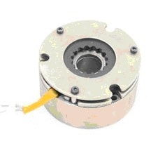
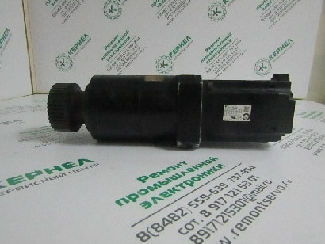

РЕМОНТ СЕРВОДВИГАТЕЛЕЙ И СЕРВОМОТОРОВ
НЕИСПРАВНОСТИ ТОРМОЗА
В этой статье мы с вами разберем еще следующую частую проблему, которая возникает на серводвигателях и сервомоторах.
На оборудовании, где необходимо удерживать механическую часть станка от падения или сползания при отключенном питании, используют серводвигатели с механическим стояночным тормозом. Стояночный тормоз предназначен для удержания вала двигателя в неподвижном состоянии при отключенном питании.
Один из распространенных дефектов это неисправность тормоза сервомотора. При возникновении такой поломки происходит заклинивание вала двигателя или отсутствие момента удержания вала полностью, либо частичная потеря момента удержания вала.
РЕМОНТ ТОРМОЗА
В Сервисный центр поступил на ремонт серводвигатель (сервомотор) Yaskawa. С неисправностью: заклинивший вал устройства серводвигателя.
По результатам диагностики выявили: неисправность тормоза сервомотора. Ремонтопригодность узла тормоза можно определить только после демонтажа этого узла с двигателя.
В большинстве случаев электродвигатель с неисправностью тормоза можно отремонтировать в специализированной мастерской ООО "Кернел".
При этом варианте ремонта сервомотора срок ремонта тормоза составляет 3 дня.
При сильном износе или сильном повреждении (например, срезаны или отсутствуют зубья одной из шестерен тормоза)
В таком случае производится поставка нового тормоза от сервомотора, срок поставки детали составляет от 2 недель.
После устранения неисправности тормоза, техническая служба Сервисного центра "Кернел" произвела настройку энкодера серводвигателя. Потом идет проверка работоспособности мотора на сервоприводе. И отправляется к Заказчику на оборудование.
На выполненные работы по серводвигателю предоставляется гарантия 6 месяцев.